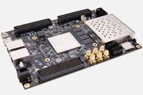

Machine Learning EngineerOpen to jobs & internships
Mustofa A. Ahmed.
Call me Hafiz. Published as Abdulhafiz Ahmed Mustofa.
I make large models run fast on real hardware.
LLM inference, speculative decoding and model deployment across GPUs, FPGAs and NPUs. PhD student at UCAS / IHEP, Chinese Academy of Sciences, based in Beijing.
I turn complex ideas into working systems. I enjoy debugging difficult systems, understanding performance bottlenecks and turning technical work into something people can use.
01 / Results
3.03×
Faster LLM decoding
Up to 3.03× with speculative decoding in vLLM: a small drafter proposes tokens and the large model verifies them in one step.
10.4×
Faster deployed models
ParT inference with TensorRT FP16, down to 0.972 ms on an NVIDIA V100 at batch size 1. Built for particle-physics experiments CMS (CERN) and CEPC.
GPU · FPGA · NPU
Three kinds of silicon
Models deployed across NVIDIA GPUs, Xilinx FPGAs and Huawei Ascend NPUs, using TensorRT, ONNX, hls4ml, Vitis AI, quantization and pruning.
5
Published papers
Three as first author, with one more submitted to IEEE CSCWD 2027.
02 / Tailor this page
What are you hiring for?
Pick a role. The evidence below, the matching projects and the matching skills all light up.
Built a DSpark-capable vLLM runtime and fixed model-loading, hybrid-attention and CUDA Graph issues at Zidong Taichu, then benchmarked on GSM8K, HumanEval and MT-Bench.
Quantization (PTQ, QAT), pruning, TensorRT and ONNX, with 10.4× and 6.6× speed-ups on an NVIDIA V100. AutoDeploy picks the optimization path for a given model and hardware.
Built AutoDeploy to take models onto NVIDIA GPUs, Xilinx FPGAs and Huawei Ascend NPUs through one workflow, with a Neo4j knowledge graph behind it. Comfortable with Linux, Docker, Git and CI/CD.
Five published papers, three as first author, plus a draft-budget study of speculative decoding submitted to IEEE CSCWD 2027. Hands-on with GNNs (HGT, TGN), knowledge graphs and local AI agents.
Reproduced DFlash and DSpark speculative decoding for Qwen3.5-4B and built a DSpark-capable vLLM runtime.
Fixed model-loading, hybrid-attention and CUDA Graph issues, then benchmarked on GSM8K, HumanEval and MT-Bench (RTX 4090).
vLLMPyTorchRuntime integrationGPU benchmarking
Research Fellow
2023 – PRESENT · BEIJING
Computing Center, IHEP, Chinese Academy of Sciences
ML deployment for the particle-physics experiments CEPC and CMS (CERN): ParticleNet and ParT on TensorRT and ONNX.
Built AutoDeploy and its deployment knowledge graph, and trained DFlash drafters for vLLM serving studies.
TensorRTONNXParticleNetParTNeo4j
Web Developer
2021 – 2022 · YANGZHOU
GeePower Energy Technology
Built the full-stack company website, including database design and query optimization.
04 / Selected work
Technical depth. Practical impact.
Keep scrolling. Two of these are live: try them.
→
Speculative decoding playgroundLIVE
Target model only
With a drafter
2.1×toy speed-up
5best draft length here
Toy model for intuition, not measured data: draft too little and you waste the drafter, draft too much and rejected tokens cost you.
★ Matches your role
LLM inference
Speculative decoding
Up to 3.03× faster decoding
DFlash, DSpark and MTP in vLLM. I trained a 3-layer DFlash drafter and studied how the proposal budget trades speed against wasted work.
Engineering details +
Measured draft acceptance, scheduler behavior, latency, throughput and answer correctness. Internship benchmarks used GSM8K, HumanEval and MT-Bench on RTX 4090; later IHEP experiments use RTX 5090. Paper submitted to IEEE CSCWD 2027.
1 / 4
A practical interface for deployment, validation and diagnostics.
★ Matches your role
Model deployment · Master’s thesis
AutoDeploy
10.4× ParT · 6.6× ParticleNet
A model-to-deployment platform. It inspects a model, picks an optimization path (TensorRT, ONNX, quantization, pruning) and deploys to GPU, FPGA or NPU, keeping reusable knowledge from every run.
Engineering details +
ParT TensorRT FP16: 0.972 ms, approximately 10.4× eager baseline speed. ParticleNet TensorRT FP32: 0.456 ms, approximately 6.6×. NVIDIA V100, batch size 1, configuration-specific. ParticleNet FP16 showed an accuracy trade-off. CPU ParT reference: 15.7 ms.
ModelToolTechniqueHardware
Drag a node. A simplified view of the AutoDeploy graph.
★ Matches your role
Graph learning
Knowledge graphs & GNNs
Neo4j · HGT · TGN
A Neo4j knowledge graph linking the models, techniques, tools and hardware behind AutoDeploy, with graph learning using HGT and TGN.

★ Matches your role
Hardware acceleration
FPGA & GPU acceleration
GPU · FPGA · NPU
Deployed networks on Xilinx FPGAs (including Alveo) via HLS, hls4ml and Vitis AI, and tuned for NVIDIA GPUs and Ascend NPUs.
hafiz@local
★ Matches your role
Personal project · Ongoing
24/7 AI assistant
Always on, served locally
An always-on assistant built on Qwen3.8-27B, served locally with llama.cpp and driven by Hermes Agent for tool use.
Also in my toolkit: model scaling and foundation-model learning curves, including how model size, training data and training duration shape learning, generalization and bottlenecks.
05 / Skills
The toolbox.
LLM inference & serving
vLLMllama.cppDFlashDSparkMTPCUDA Graphs
Model optimization
TensorRTONNXPTQQATPruninghls4mlVitis AI
Deep learning
PyTorchHugging FaceGNNs (HGT, TGN)RL
Programming & infra
PythonC++CUDALinuxDockerGitCI/CDNeo4j
Hardware
NVIDIA GPUsXilinx FPGAsHuawei Ascend NPUs
Research interests
ML accelerationEfficient LLM inferenceWorld modelsAutonomous agents